0. 課程資訊與教材
| 課程名稱 | 生成式AI應用電台・訂閱制第二季，第二堂 |
|---|---|
| 直播日期 | 2026/04/24（五）20:00，本段錄影全長 2 小時 33 分 35 秒（單段、中間沒有休息） |
| 講師 | 益師傅（楊俊益・ECF） |
| 本堂主題 | 用 One-shot 範本控制 AI 的輸出一致性：Gemini Gem、NotebookLM 自訂報告、Claude Project、簡報提示詞產生器、圖像提示詞參數化 |
| 課程定位 | 實作課，沒有簡報投影。全程是他本人的螢幕操作，邊做邊講，示範失敗也照播 |
| 要先準備 | Google 帳號（Gemini／NotebookLM）、Claude 帳號（免費即可，Project 不用付費）；想跟著做圖的另外準備一張人物照片 |
📚 這堂課的教材（可直接下載）
三份都是老師當堂發到課程資料夾、要大家一起打開跟著做的檔案，本頁已徵得同意公開。前兩份是 Google 官方教材，第三份是他自己用課堂上教的提示詞產出的成品。
| 教材檔案 | 這是什麼 | 課堂上拿來做什麼 |
|---|---|---|
| 📄 22365_3_Prompt-Engineering_v7-1.pdf | Google 的《Prompt Engineering》白皮書（作者 Lee Boonstra，2025 年 2 月版，68 頁）。從 LLM 的輸出參數講到 zero-shot／few-shot、System／Role／Contextual、Step-back、CoT、ReAct，最後是十幾條實務守則 | 第 6 章當成「被改寫的素材」丟進企劃案 Gem；第 9 章當成 Claude Project 的簡報素材 |
| 📄 Google Prompt.pdf | Google Workspace 的《Prompt Guide 101》（71 頁）。核心是一個四要素公式與六個小技巧，後面依職務別（行政、公關、客服、主管、人資、行銷、專案、業務）各給一疊可直接抄的提示詞 | 第 7 章在 NotebookLM 建成「Google Workspace Gemini 提示詞入門指南」筆記本，並生成心智圖與簡報 |
| 📄 Recursive_Mastery_Framework.pdf | 五頁的成品，不是教科書。老師用「淺色簡報 5 頁」那段提示詞、以自己的經歷當素材，在 NotebookLM 產出的策略顧問風格簡報（金字塔圖／矩陣圖／長條圖／SWOT／比較圖各一頁） | 第 9 章當作 Claude Project 的版型樣板——重點不是內容，是讓 AI 學它的配色與版面 |
1. 一張圖看懂這堂
這堂表面上是六個平台的操作教學，實際上從頭到尾只有一招，而且這一招只有三個動作。
2. 他先問一個職場問題：你能保證這次跟上次一樣嗎
開場十分鐘沒有講任何工具，他先把題目講清楚。這一段決定了後面兩個半小時所有示範的意義。
他從自己的粉絲專頁講起：最近有一系列資訊圖貼文按讚數異常高，內容各不相同——學習的本質、機車保養、線性代數——但每一張的版型、配色、人物角色都一模一樣。他說這件事看起來沒什麼，卻是職場上最實際的需求。
為什麼一致性是職場問題，不是美感問題
他一連舉了三個例子，每一個都不是「好不好看」，而是「交得出去嗎」：
- 會議紀錄——「我不能這一次做的跟上次的會議紀錄不一樣吧？」同一個單位、同一種會，格式每次跳來跳去，收件的人會先問你是不是換人做了。
- 月報與簡報——這個月做的圖不能跟上個月不一樣，否則整份年度資料放在一起會像拼貼。
- 企劃書與規格書——章節順序、標題層級是被審查的對象，不是可以自由發揮的地方。
他也先承認一般人的做法為什麼不夠用：「其實我們透過描述詞、透過 YAML 的方式去定位，做出風格，他就可以一致。但是那是我們想像中的，有時候還是會有點偏差。」——形容詞寫得再細，AI 也只是在猜；要真的鎖住，得給它看實體。
📘 簡報上怎麼寫
Google 的白皮書把這件事放在最前面的實務守則第一條：「最重要的一條，是在提示詞裡提供範例（one-shot／few-shot）。」理由寫得很直白——範例是一種強力的教學工具，它給模型一個可以瞄準的參考點，能同時改善輸出的準確度、風格與語氣〔簡報 22365_3 p.54〕。老師整堂在做的，就是把這條守則從「寫在提示詞裡的文字範例」升級成「掛在參考區的整份檔案」。
3. 實作一：把「七分格資訊圖」做成一個叫得動的 Gem
第一個示範。整段的價值不在「怎麼建 Gem」，而在最後那一句被很多人漏掉的話。
五個步驟
- 進 Gemini，左側找到 Gem → 新增 Gem。
- 名稱寫這個機器人要做的事，例如「七分格圖像製作」。
- 說明是給別人看的：你自己知道怎麼用，分享出去別人不知道，說明會顯示在下方。
- 使用說明貼上提示詞——這一格才是本體。
- 捲到下面的 相關資訊，按「＋」把範本檔案加進去。
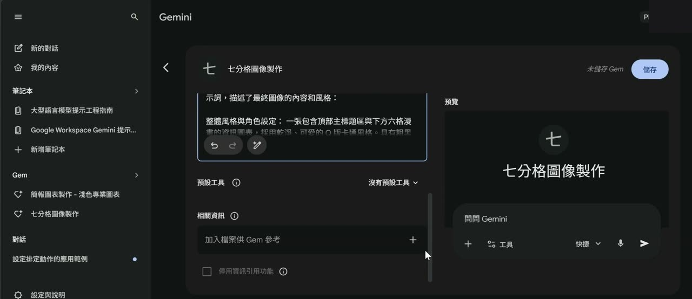
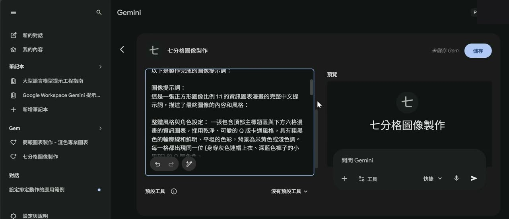
提示詞開頭那一句，決定它會不會亂動
七分格提示詞的第一段是這樣起手的（逐字照抄自課程教材檔）：
他特別解釋了兩個細節：那個斜線就是「或」（「你寫一個斜線他看得懂」），以及「一定要等待用戶提供」這句是為了擋住它自作主張——沒有這句，你一進去它就會拿提示詞裡的示範內容直接畫一張給你。
關鍵在最後：相關資訊放了，還要明講
他把一張已經畫好的七分格圖丟進「相關資訊」，然後停下來強調：檔案放進去不等於它會用。提示詞裡如果沒有指名要參考，AI 只會照著提示詞裡的文字描述自己發揮。所以要補上這一句：
他一連問了兩次「理解嗎」，還請大家在聊天室按數字回覆——整堂最像考試的地方就是這裡。
他順手把同一招換成「會議紀錄」再講一次
為了讓沒在畫圖的人也接得住，他當場把場景換掉：把你平常在寫的會議紀錄存成 PDF，丟進 Gem 的相關資訊，然後在提示詞裡寫——
「沒有辦法說格式一模一樣，但是它的區塊、摘要、主題它是一樣，就可以節省你很多時間囉。」他自己先把期待值講清楚了。
📘 簡報上怎麼寫
白皮書把「給模型背景資料」獨立成一種技巧，叫 Contextual prompting（脈絡提示）：提供與當前任務相關的具體細節或背景資訊，幫助模型理解語境並據此調整回應〔簡報 22365_3 p.18〕。它跟 System prompting（定義模型整體任務）、Role prompting（指定角色口吻）是三件不同的事，可以疊在一起用。
用這組定義回頭看 Gem 的四格，對應得很乾淨：「使用說明」＝ System＋Role，「相關資訊」＝ Contextual。老師沒有用這些名詞，但他把兩者分開放的做法，正好就是白皮書建議的「分開設計、彈性組合」。
4. 讓它每次都準的四件事
Gem 建好只是及格。這一章是他一邊踩雷一邊補上去的四個設定，每一個都對應一次現場失敗。
一、預設工具要鎖死
他做到一半按了編輯回頭補：「這個機器人是要做什麼？畫圖，對不對？所以麻煩你在這個預設工具的地方，你幫我選擇建立圖像。」理由很實際——不鎖的話，你丟檔案進去它可能回你一大篇文字分析，等於白等一輪。
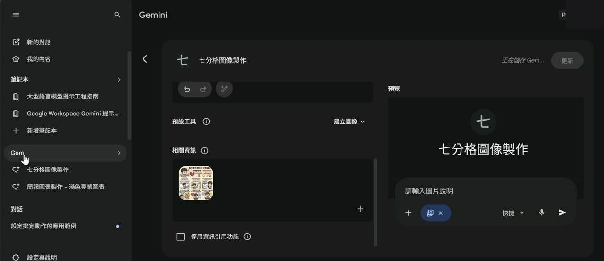
二、丟檔案比丟連結準
他實測的心得是：「Gem 對外部連結其實效果有時候會一半一半啦。假若你今天是丟檔案給他，他來幫你做七分格的圖像比較沒有問題。」而外部連結會歪掉的原因他也講得很白話——網頁有上版、左版、右版、中版、下版，AI 不知道你要哪一塊：
三、人物照當第二個參數，而且要一開始就給
他先示範了錯誤版本：只丟檔案不給人物，出來的角色變成一個不相干的小女生；後面才補上傳人物照，結果得再跑一輪。他的結論是「所以我們一開始的時候把檔案丟上去，並貼這個人物的圖像給了他」——這個 Gem 其實吃兩個參數，一次給齊就不用來回問。
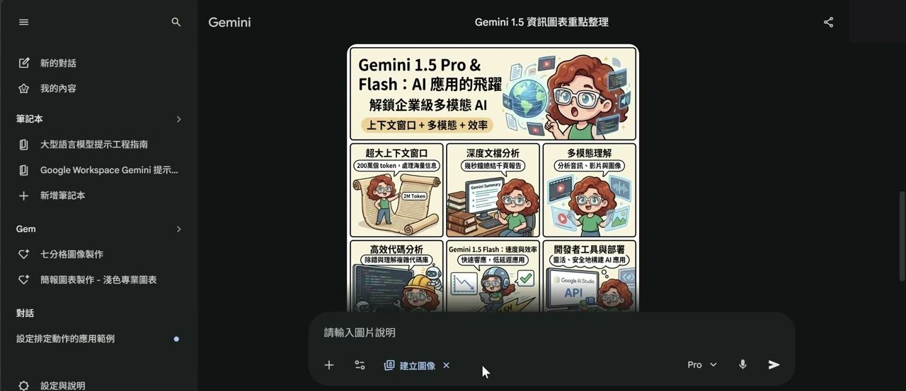
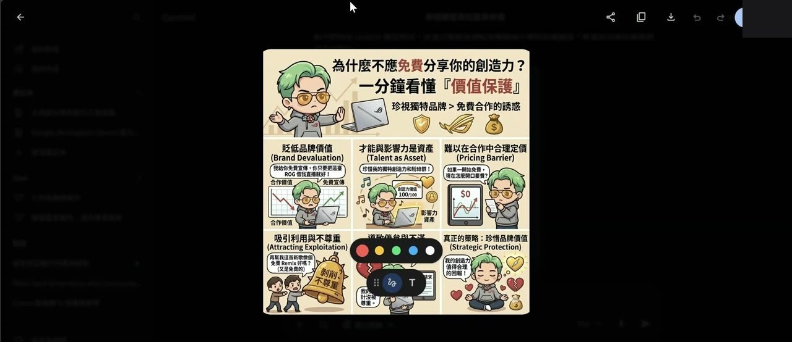
四、提示詞的頭跟尾最有力，所以結尾要再壓一次
連結示範出來的圖「有人物、有筆電，但內容不是那個品牌」，他沒有跳過，而是把原因講出來，並且給了一個結構性的解法：
這段要加在使用說明的最後面。他的理由是提示詞的頭尾強度最強，中間最弱——所以開頭指定版型、結尾再壓一次內容，兩頭包夾。
📘 簡報上怎麼寫
「注意：⋯需一致」這種寫法，在白皮書裡剛好踩在一條建議上：Use Instructions over Constraints（用指令，不要用限制）。白皮書說，越來越多研究顯示正向指令比一長串「不要做什麼」有效，因為指令直接說出你要的結果，限制卻讓模型自己猜什麼才算被允許，而且多條限制彼此還會打架〔簡報 22365_3 p.56–57〕。
- 老師寫的是「內容需以⋯一致」——這是指令，不是「不要亂加內容」。
- 白皮書給的操作順序也一樣：先寫指令，只有在安全、格式硬性要求時才補限制。
- 至於「頭尾強度比較強」這一條，白皮書裡沒有，是他自己反覆測出來的經驗，本頁照原話保留。
5. 它就是不畫圖的時候：兩句救援話術
全場最多人抄筆記的八分鐘。沒有截圖，因為這一段的重點是兩句話。
他先問大家：AI 只吐了一大堆文字、七格的內容都寫好了，就是不生圖，你會怎麼辦？有人答「請重新畫圖」，他說很棒，然後給了他自己的版本。
第二句：它開始自稱語言模型，就別耗了
如果連「說好的圖呢」都沒用，它回你「我只是一個語言模型」，他的判斷很果斷——這一輪已經壞掉了，不要再在同一個對話裡拗。做法是：
- 把它最後產出的那段七格文字內容複製起來（它其實已經幫你把提示詞寫好了）。
- 開一個全新的對話。
- 丟過去，跟它說：請畫出這個提示詞的圖像。
他的理由是省時間：「你就不要跟他耗，也不用重新再讓他去生成那些東西，因為他已經幫你把提示詞給做出來。」
他順手把課堂變成作品牆
這一段中間他臨時起意開了一面 Padlet 電子牆（「2026 第二季第二堂課作品」），教大家用 視窗鍵＋Shift＋S 截圖、Ctrl＋V 貼上發布，把當堂做出來的圖貼上去互相觀摩，最後會匯出成 PDF 放回課程資料夾。
6. 實作二：一本 68 頁白皮書，被改寫成一份創業企劃書
同一招換到純文字場景。這一章最能說服「我又不畫圖」的人。
他建了第二個 Gem 叫「企劃案撰寫」，做法跟第 3 章一模一樣，只是兩格內容換了：使用說明寫成一段格式改寫指令，相關資訊放一份格式對的企劃書當樣本（他用的是屏東大學企管系學生的「咕美食」百貨美食街創業營運計劃書）。
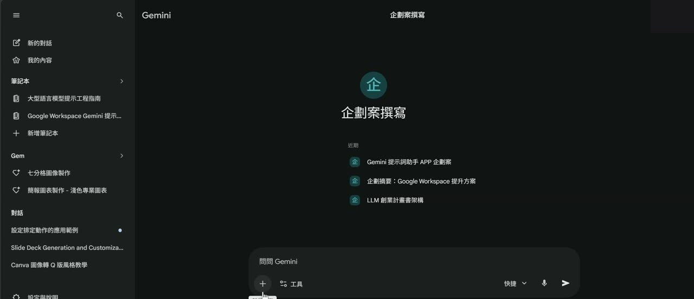
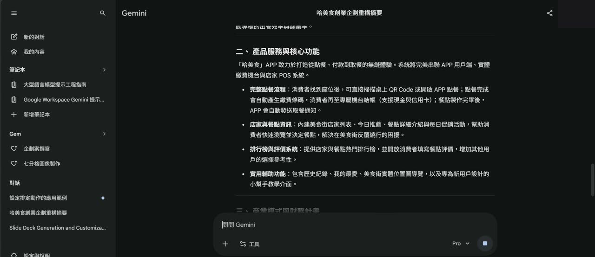
他當場示範失敗，然後把原因講出來
第一次跑出來的東西整個錯亂——他丟的是 Google 的提示詞工程白皮書，AI 卻還在寫咕美食的內容。他沒有剪掉，直接說：「好，它又錯亂了⋯它是整個錯亂的，它沒有辦法根據我給它的。」接著給了兩個處理方式：
- 不要用「快捷」——「我覺得快捷根本就是沒有用⋯這種細節處理的部分，你最起碼用思考型。」他改成 Pro 重跑。
- 換平台——「這些事情，其實在 Claude 都不太會有這個狀況」，這句話直接鋪成了第 9 章。
改用 Pro 之後成功了：一本講提示詞工程的白皮書，被重構成「第一章專案機會與構想／第二章服務內容與執行／第三章市場與環境分析／第四章行銷策略」的創業企劃書，連 5W1H 分析、行銷 4P／7P、損益預估都照著樣本的位置長了出來。他的評語是：「明明是一個提示詞工程的事情，他卻來談創業的構想。這有點像是，我們給他一個方向透過大數據的解析，來告訴你說，怎麼樣去做一個創業的思維。」
📘 簡報上怎麼寫
Google Workspace 的《Prompt Guide 101》把一個好提示詞拆成四個要素，並且說不必四個都用，但用到幾個就會有幫助〔簡報 Google Prompt p.5〕：
| 四要素 | 簡報怎麼定義 | 這堂課對應到哪裡 |
|---|---|---|
| Persona（角色） | 你希望 AI 站在誰的位置回答 | Gem 的名稱與說明（「企劃案撰寫」） |
| Task（任務） | 一定要有動詞——摘要、改寫、產生、比較 | 「請將上傳檔案的內容⋯重新整理、摘要」 |
| Context（脈絡） | 相關背景與素材，可以用 @檔名 標你自己的檔案 | 相關資訊那一格，也就是這堂的主角 |
| Format（格式） | 要條列、要表格、要幾頁、要多長 | 「重構成相關資訊的檔案格式與結構」「至少 8000 字」 |
簡報同時提醒「Task 裡的動詞是整個提示詞最重要的部分」，並列出六個小技巧：用自然語言、具體並反覆修正、簡潔不繞、把它當成對話、用你自己的文件、讓 Gemini 當你的提示詞助手〔簡報 Google Prompt p.5〕。老師整堂的操作幾乎是這六條的實況版，尤其是「用你自己的文件」。
7. 同一招搬到 NotebookLM：自訂報告的三行寫法
Gem 那格叫「相關資訊」，NotebookLM 這邊叫「來源」。他要處理的是同一個問題：怎麼指定「哪一份是內容、哪一份是格式」。
做法：兩份來源，一份當內容一份當格式
- 建一個筆記本，把兩份 PDF 都加進來：一份是你要改寫的素材，一份是格式範本。
- 把檔名改短——他當場把長檔名改成
企劃書.pdf與來源.pdf，理由是等一下要在提示詞裡直接叫檔名。 - 右側點「報告」→「自訂報告」，在裡面寫三行指令。
他強調冒號後面要空一格（跟第 4 章那個 Token 空白是同一個習慣），也坦白說字數那行「它不會理你啦，那我們就寫開心的」。
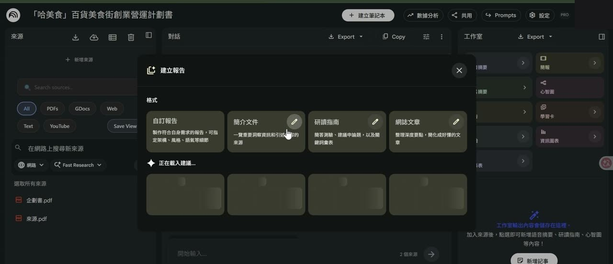
企劃書.pdf 與 來源.pdf，右側工作室則列著簡報、心智圖、學習卡、資訊圖表等輸出選項。［62:26］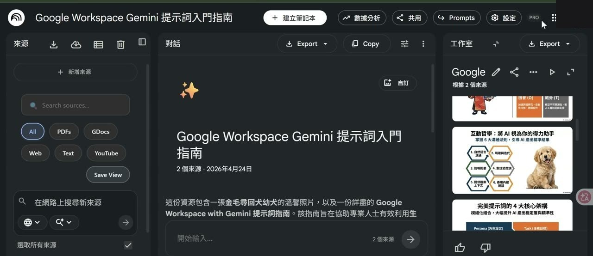
Google Prompt.pdf 加進來，取名「Google Workspace Gemini 提示詞入門指南」。看右側工作室產出的簡報縮圖——第二張正是「完美提示詞的 4 大核心架構：Persona（角色設定）／Task（任務指令）⋯」，那就是教材第 5 頁那個四要素公式被畫成圖的樣子。［66:55］企劃書.pdf 的章節結構，他當場說「好，它這個失敗了⋯這是失敗的，你知道為什麼嗎？」，也坦承「理論上 NotebookLM 應該會比較聽話啦」。他最後的處理是承諾補一份寫好的報告提示詞給大家，而不是硬拗成功。但 NotebookLM 的簡報其實是可以下指令的
失敗歸失敗，他接著證明了一件更有用的事：NotebookLM 的簡報可以精細到「第幾頁、左邊放什麼、右邊放什麼」。做法是把要用的圖也一起加進來源，然後在提示詞裡直接叫檔名：
他當場翻出上週做好的簡報驗證：第三頁那隻狗確實出現在右邊，第二頁的 Q 版人物確實在左邊。他的結論是——「其實 NotebookLM 是可控的。有人用 YAML 來做控制，那我用自然語言來做控管。自然語言其實很容易，但是它可能它的細節度沒有 YAML 來得好，但至少人人都可以控制它。」
📘 簡報上怎麼寫
白皮書有一條直接對應「檔名要短、冒號後空一格」這種怪癖：Experiment with input formats and writing styles（換句話說再試一次）。它的說明是，不同模型、不同措辭、把同一件事寫成問句／敘述句／指令句，結果會不一樣，所以提示詞的用字與結構本身就是要拿來實驗的〔簡報 22365_3 p.59〕。老師的「空一格是 Token 的特性」屬於這個範疇的個人心得，白皮書沒有這條規則。
8. 簡報提示詞產生器：把版面選項變成一段提示詞
下半場的主題轉成簡報。他先發了一支自己寫的網頁小工具，因為接下來三章都要用它產出的提示詞。
這是一支單檔 HTML，本機瀏覽器打開就能用，不用連線。它的角色不是做簡報，是把「幾頁、什麼風格、什麼配色、每頁放什麼圖表」這些選擇，翻譯成一段可以貼到任何平台的提示詞。
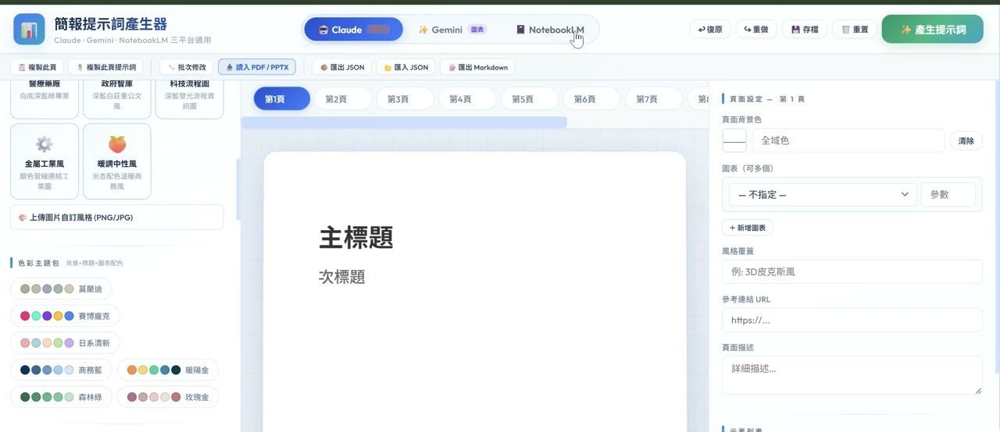
為什麼要分平台：Claude 不特別講就不會給你 PPTX
他解釋工具裡那三顆平台鈕的用途：Gemini 跟 NotebookLM 拿到提示詞會直接做簡報，Claude 卻會做成互動式網頁。所以工具在偵測到目標平台是 Claude 時，會自動在輸出的提示詞開頭加上一段硬性要求。
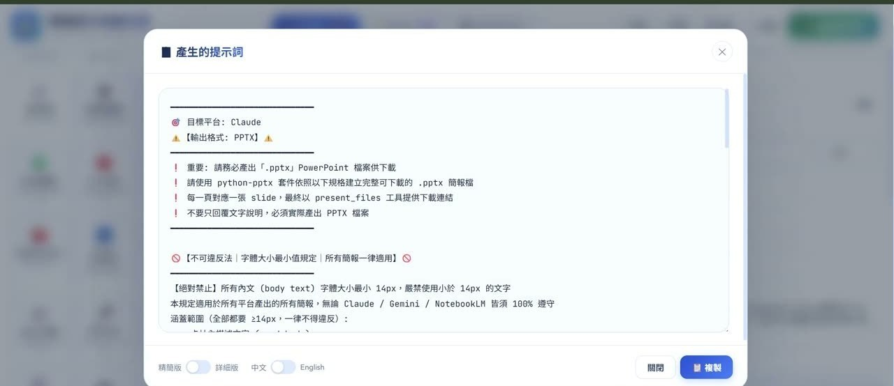
做簡報請用淺色底
整段裡他語氣最重的一次拜託，跟 AI 沒關係，是版面常識：
📘 簡報上怎麼寫
「不要只回覆文字說明，必須實際產出 PPTX 檔案」這種寫法，對應白皮書兩條守則：
- Be specific about the output（把要的輸出講清楚）——白皮書的示範是「產生三段式部落格文章，主題是前五名遊戲主機，語氣要口語」對比「產生一篇遊戲主機的文章」，差別就在具體〔簡報 22365_3 p.56〕。
- Experiment with output formats（指定輸出格式）——對於抽取、排序、分類這種非創作任務，白皮書建議直接要求 JSON 或 XML 這類結構化格式，因為要求結構本身就會逼模型收斂、減少幻覺〔簡報 22365_3 p.60〕。老師要求
.pptx，是同一個道理換一種檔案格式。
9. Claude Project：把一份 PDF 當版型樣板餵進去
同一招的第三次換裝。Gem 的兩格在這裡叫 Instructions 與 Files，做法一字不改。
四個步驟
- Claude 左側點 Projects → 右上 New Project（他強調不用付費就能用）。
- 給名稱，例如「簡報版型學習製作」。
- Instructions 按「＋」，貼上第 8 章工具產生的那段提示詞，按 Save Instructions。＝ Gem 的「使用說明」
- Files 按「＋」，上傳版型範本。＝ Gem 的「相關資訊」
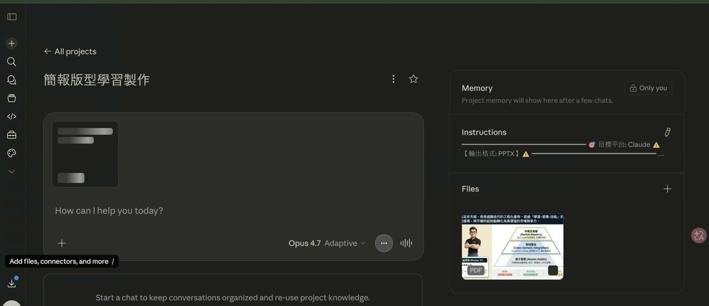
Recursive_Mastery_Framework.pdf 在這堂課的角色。Gem 與 Project，欄位對照
| 做的事 | Gemini 的 Gem | Claude 的 Project |
|---|---|---|
| 固定的指令 | 使用說明 | Instructions |
| 範本／參考檔案 | 相關資訊 | Files |
| 限制它只做一件事 | 預設工具（例：建立圖像） | 寫進 Instructions（例：輸出格式 PPTX） |
| 給別人用的說明 | 說明 | 專案描述 |
| 怎麼叫用 | 要先點進那個 Gem | 要先點進那個 Project |
他提前劇透了下一步：Project 可以一句話變成 Skill
在建 Project 的中間他插了一段：「其實這些相關的應用都可以轉成 Skill，你只要跟他講一句話⋯請將上述的功能幫我轉換成一個簡報學習製作的 Skill。光講這些字，它就可以幫你轉換了，而且很快。」差別在哪，他留到第 11 章才講。
10. 五個平台做同一份簡報，他選 Claude，理由不是漂亮
同一段提示詞、同一份素材、同一份版型樣板，同時丟進 Gemini Canvas 與 Claude Project 跑。這是整堂最有實驗性質的一段。
他先問大家猜哪個平台做出來的簡報最好看，然後自己揭曉：
Gemini 這邊：要記得把工具切成 Canvas
他點名一個常見的漏做步驟：在 Gemini 裡要做簡報，工具那格一定要選 Canvas——「不是 Canva 啦，是 Canvas 畫布的意思」，模型再選 Pro 或思考型。
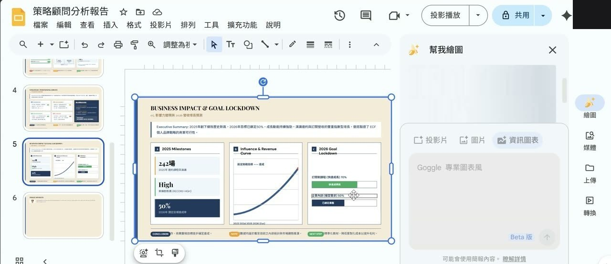
Claude 這邊：它會自己修版面
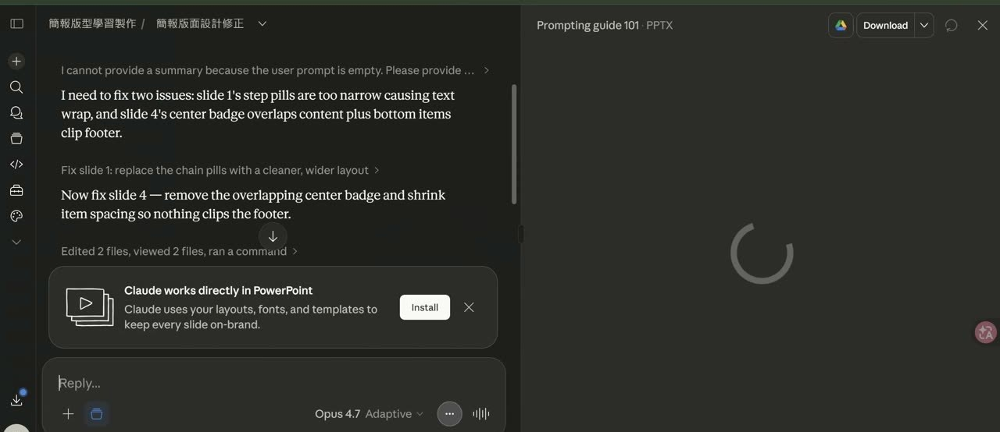
Edited 2 files, viewed 2 files, ran a command。右上角是可以直接下載的 Prompting guide 101 · PPTX。這一整段就是「能改」的實況。［100:01］他的五平台心得
| 平台 | 他的評語 | 速度 |
|---|---|---|
| Claude | 版面、內容、表格最漂亮，細節度最好；會給可下載的 PPTX，而且可以再叫它修 | 最慢 |
| Gemini（Canvas） | 透過提示詞要求可以做得不錯，穩紮穩打，內容可以改；不下功夫就是「一邊圖一邊文字，醜醜的」 | 中間 |
| NotebookLM | 最花俏、圖最好看，但產出是圖，字不能改——企業場景不適用，老師的課比較常用 Gemini Canvas | — |
| Perplexity | 做簡報「蠻醜的，直接講用醜來形容」，但寫課綱細節度最好 | 最快 |
| Gamma | 「最近做出來的簡報就比較符合商業的標準⋯做出來讓你看不出它是 Gamma 做的」 | 所有工具裡最快 |
為什麼他把標準訂在「能不能改」
這一段是整堂的價值判斷，他講得又快又用力。先是設計原則：
但書是這樣：「假如是老師們就不一樣。老師的目標受眾有時候是中學生、小學生，他們要的就是漂亮的圖表、能夠吸引他的目光，這就是一個好的簡報。看你的目標受眾是誰，做出適合他的簡報，這才會有他的價值。」他自己主要跑企業研習，所以一定要能改。
然後他把「能改」翻譯成一個所有上班族都懂的場景：早上改一次、下午改一次、晚上傳訊息叫你再改，最後說「我要第一個版本」。
11. Gem、專案、Space、主題集是同一件事，Skill 是下一階
課堂尾聲他把四個平台的同一個功能一次攤開，然後講出它們共同的天花板。
四個平台，同一張表
| 平台 | 它叫什麼 | 指令欄 | 參考檔案欄 | 他特別提的一點 |
|---|---|---|---|---|
| Gemini | Gem | 使用說明 | 相關資訊 | 可以設「預設工具」鎖成只畫圖 |
| Claude | Project | Instructions | Files | 不用付費就能建；可一句話轉成 Skill |
| ChatGPT | 專案 | 指令 | （改版後他當場找不到） | 「其實已經很久很久⋯從 GPTs 的時候它就有這個功能了」 |
| Perplexity | Space | Instruction（上限 8000 字） | 檔案＋外部連結 | 唯一可以掛 URL 當固定參考來源的 |
| Felo | 主題集（原本叫 Space） | 自訂提示詞 | 檔案＋外部連結 | 「它是學 Perplexity」 |
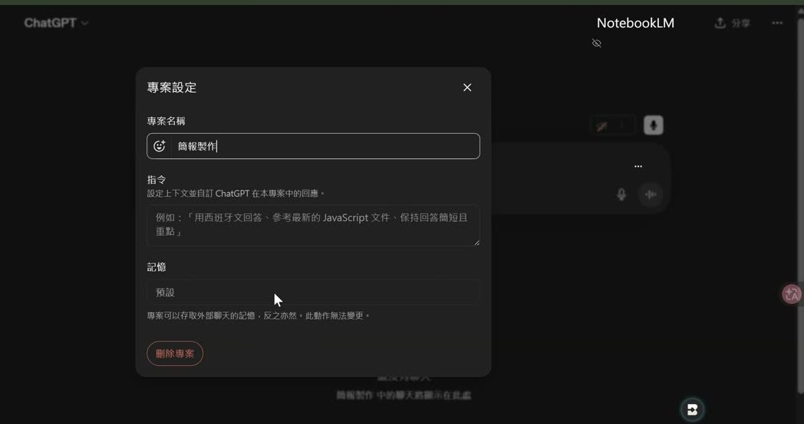
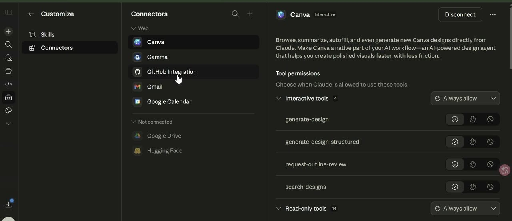
Skill 跟前面四個差在哪
差別只有一個，但很關鍵：Gem 與 Project 是房間，你得先走進去才叫得動；Skill 是隨身技能，講到關鍵字它自己跳出來。
再往上一階是 Connectors 與排程，他也把收費的界線講清楚：串 Gmail 把簡報寄出去屬於 Connector，「每天早上 9 點自動執行」這種排程要用到 Claude Code，是要付費的。他的評估是「像這樣的一些功能串接，基本上都還算是小事啦，耗不了多少錢」。
📘 簡報上怎麼寫
白皮書沒有談 Gem／Project 這種產品功能，但它在最後一節給了一條制度性的建議，剛好補上老師沒講的部分：Document the various prompt attempts（把每一次嘗試記錄下來）。它建議用一張表固定記下六個欄位——名稱與版本、目標、模型、Temperature／Token Limit／Top-K／Top-P、完整提示詞、輸出結果，再加上「這次結果 OK／NOT OK／有時 OK」與回饋欄〔簡報 22365_3 p.65–66〕。
白皮書強調這件事的理由，跟老師整堂在解的其實是同一個問題：同一個提示詞在不同模型、不同版本、不同參數下的輸出會漂移，甚至同一個模型跑兩次也會有差。老師的解法是給範本鎖住輸出；白皮書的解法是把每次嘗試存檔以便回溯。兩件事不衝突，可以一起做。
12. 回到老本行：把圖像提示詞寫成可以代參數的公式
最後十八分鐘他打開自己兩三年份的提示詞資料夾，一支一支翻。這一段看起來像閒聊，實際上是整堂那一招的另一種寫法。
他的提示詞長成一份規格書
他翻出一支自己寫的圖像編輯提示詞，開頭是這樣：
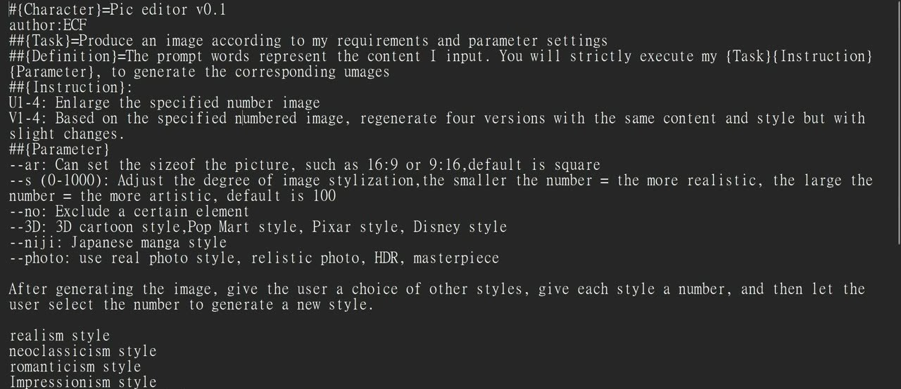
U1-4 放大指定編號的圖、V1-4 依指定編號重生四個微調版本；Parameter 段定義了六個參數，包括 --ar（比例）、--s（風格化程度 0–1000，數字越小越寫實）、--no（排除元素）、--3D、--niji、--photo。最下面還列了一整排可選畫風。［137:35］另一種寫法：讓它先停下來等你填空
他的圖像提示詞幾乎都用同一個開頭模式——先宣告任務、再宣告一個變數、然後明講「等待用戶輸入」。以蛋糕師傅那支為例（逐字照抄自課程教材檔）：
後面接一整段幾百字的完整場景描述當範例。使用者只要打兩個字，它就會把那段長描述裡的關鍵詞抽換掉再生成。仿古青銅那支也是同一個模子：「請等待用戶輸入遠古青銅器仿製品 {物品}，再根據 {物品} 的外觀特徵，色調只能符合遠古青銅用色來重製⋯」，後面附一整段哆啦A夢青銅器的示範描述。
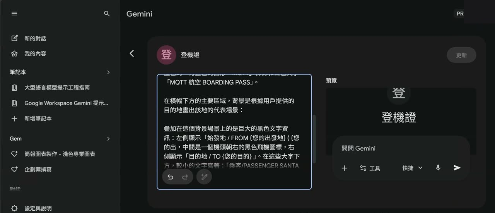
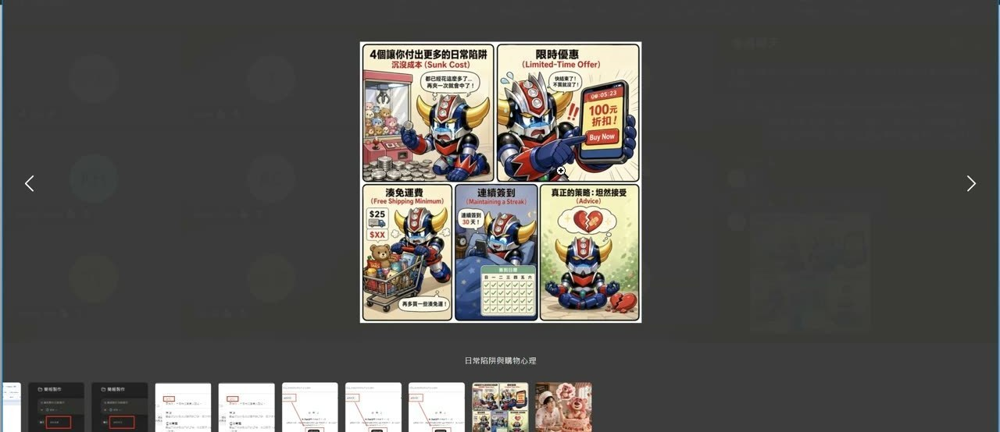
他對「舊提示詞」的看法
翻資料夾的過程他一直在講一件事：這些是兩三年前的東西，那時候很難做，現在很容易——但這反而是機會。他提到自己 2024 年做的人物一致性、六幅漫畫、LED 電子看板，當時「做出來人家以為是真實的」。
收尾他把整堂的圖像段落壓成四個字，也順手給了一句可以直接用的建議：「大家都做那樣的，你就用一些古老的⋯先 PO 先贏啦。」
📘 簡報上怎麼寫
白皮書有一條就是在講 {品項} 這種寫法，叫 Use variables in prompts（在提示詞裡用變數）：與其把值寫死，不如改成變數，這樣同一個提示詞可以重複使用、也方便嵌進自己的應用；白皮書的示範是 {city} = "Amsterdam"，然後提示詞寫「You are a travel guide. Tell me a fact about the city: {city}」〔簡報 22365_3 p.58〕。
老師的 {品項}、{物品}、{人物特徵}、{您的出發地} 完全是同一件事，而且他多做了一步——加上「一定要等待用戶提供」，把變數從「填空」變成「必填欄位」。這一步白皮書沒有寫，是實際拿去給別人用之後長出來的。
13. 簡報有、課堂沒細講的部分
三份教材裡有一大塊內容整堂沒有展開，但它們是這一招的理論底。這一章不是課堂實錄，是教材摘要，看的時候請跟前面十二章分開。
一、白皮書把「給範例」分成兩級，老師只用了第一級
| 技巧 | 白皮書怎麼定義 | 課堂上有沒有出現 |
|---|---|---|
| Zero-shot | 只給任務描述，不給任何範例。最簡單的一種〔p.13〕 | 有——但那正是他說「會歪掉」的那種用法 |
| One-shot | 給一個範例讓模型模仿〔p.15〕 | 整堂的主角。Gem 的相關資訊、Claude 的 Files 都是給一份 |
| Few-shot | 給多個範例讓模型看出規律。白皮書建議至少 3–5 個，分類任務建議從 6 個開始測〔p.16、p.60〕 | 沒有講。老師示範的都是一份範本 |
白皮書挑範例的三個要求也值得抄下來：相關、多樣、寫得好；而且要涵蓋邊界案例，因為「一個小錯誤就會讓模型搞混」〔p.17〕。
二、三種提示詞是分開的，可以疊在一起
- System prompting——定義模型的整體任務與能力範圍，例如「把影評分成正面／中立／負面，只回傳大寫標籤」。白皮書指出它也用來控制輸出格式（要求回 JSON 會逼模型建立結構、減少幻覺），以及安全性（加一句「回答時請保持尊重」）〔p.18–21〕。
- Contextual prompting——提供當前任務的具體背景，是動態的、隨任務改變的〔p.18〕。＝這堂課的「相關資訊」。
- Role prompting——指定身分與口吻，「像是給模型一張藍圖，告訴它要什麼語氣、風格與專業視角」〔p.21–22〕。
三、整套推理類技巧，這堂完全沒碰
| 技巧 | 一句話說明〔簡報 22365_3〕 |
|---|---|
| Step-back prompting | 先問一個比較概括的問題，把答案餵回去再問真正的問題，讓模型先啟動相關背景知識〔p.25〕 |
| Chain of Thought（CoT） | 要求模型寫出中間推理步驟。白皮書用「我 3 歲時伴侶是我年齡的 3 倍，我現在 20 歲，伴侶幾歲」示範：直接問答錯，加一句 Let's think step by step 就答對〔p.29–30〕。它也提醒 CoT 的 temperature 要設 0，而且答案要放在推理之後〔p.64〕 |
| Self-consistency | 同一題跑多次，取多數決〔p.32〕 |
| Tree of Thoughts / ReAct | 讓模型同時展開多條推理路徑，或邊推理邊呼叫外部工具〔p.36–37〕 |
| LLM 輸出參數 | Output length、Temperature、Top-K、Top-P 各自在調什麼，以及參數設太極端會讓模型「卡住」不斷重複〔p.8–13〕 |
四、Google Workspace 那本，整本都是可以直接抄的提示詞
Google Prompt.pdf 除了第 5 頁那個四要素公式，主體是依職務別分成八章的提示詞範例庫：行政支援、公關溝通、客戶服務、經營主管、第一線管理、人力資源、行銷、專案管理、業務〔簡報 Google Prompt 目錄〕。每一段都附使用情境，並示範「第一次問完之後，追問要怎麼寫」的迭代範例。課堂上只把它當成被改寫的素材，沒有翻內容——對想直接找可用提示詞的人，這一本比白皮書實用。
五、第三份教材該怎麼看
Recursive_Mastery_Framework.pdf 不是教材，是成品。五頁分別是金字塔圖、對照表加趨勢圖加象限圖、能力評級加策略定位、SWOT 四象限、指標卡加折線圖，每頁頂端一段深色的 Executive Summary，底部一列 RISK／ACTION／INSIGHT 或 CONCLUSION／NOTE。看它的方式是看版面不看內容——這正是第 9 章把它丟進 Claude Files 的用途。
14. 這堂課真正在教的事
一、把「寫提示詞」換成「準備範本」
整堂沒有一次是靠把提示詞寫得更長更細來解決問題。每一次卡住，他的動作都是去找一份已經長對的檔案丟進去——一張畫好的七格圖、一份格式對的企劃書、一份五頁的簡報成品。形容詞會被誤讀，實體檔案不會。這是這堂跟一般提示詞課最大的分野。
二、光放進去沒有用，要在指令裡指名
他反覆問「理解嗎」的那一句，才是真正的技術含量：「版型及風格需以相關資訊中的檔案一致。」參考區跟指令區是兩格，AI 不會自己把它們連起來。這個道理在 Gem、Claude Project、NotebookLM 自訂報告都一樣成立，只是欄位名字換了。
三、選工具的標準是「能不能改」，而不是「好不好看」
NotebookLM 做出來的簡報最漂亮，他卻在企業場合幾乎不用，因為產出是圖、字不能改。這個判準背後是一個很務實的假設：你交出去的東西一定會被要求修改。他甚至補上但書——如果你的受眾是小學生，那漂亮就是對的。判準要跟著受眾走，不是跟著工具排行榜走。
四、失敗照播，而且講得出原因
這堂有三次示範沒成功：Gemini 快捷模式改寫錯亂、NotebookLM 自訂報告沒照格式、自己寫的工具找不到新功能。三次他都沒有跳過，而是當場說「這是失敗的」並給替代路線（換 Pro、換平台、之後補檔）。從筆記的角度，這三段比成功的示範更有價值——它們標出了這一招目前的邊界在哪。
五、先把手上這一格做熟，再談自動化
他花了不少篇幅勸大家不要急著追 AI Agent：「你們公司的人都會幫你做好，你不用急。」他自己的排序很清楚——先讓 Gem／Project 穩定產出你要的東西，再談 Skill 自動叫用，最後才是 Connector 串接與排程。同一段他也講了為什麼不要硬撐不擅長的事：「為什麼要去朝 Weakness 硬要去撞呢？」術業有專攻，交給厲害的人來處理。
15. 老師金句
16. 資料來源與整理說明
| 來源 | 2026/04/24 課堂錄影單段，全長 2 小時 33 分 35 秒；課程資料夾中三份教材（Google《Prompt Engineering》白皮書 68 頁、Google Workspace《Prompt Guide 101》71 頁、Recursive Mastery Framework 5 頁） |
|---|---|
| 整理方式 | 全程本機處理：以場景偵測擷取 265 張關鍵畫面、產生 1958 段逐字稿並剔除 17 段辨識幻覺、實得 1941 段，再依逐字稿手寫章節目錄；第 13 章與各章「簡報上怎麼寫」小節另行讀完三份教材後對照撰寫 |
| 時間戳 | 章節 chip 與引文後方的［mm:ss］對應錄影播放器時間 |
| 整理 | 竹貞（Tarshar 的逐幀筆記專員） |
哪些是課堂、哪些是教材
- 第 2–12 章的正文與所有
.golden金句：來自錄影逐字稿，是老師當堂講的話。 - 各章末的「📘 簡報上怎麼寫」與第 13 章整章：來自三份教材，出處以〔簡報 檔名 p.頁碼〕標示，老師課堂上沒有講到這些內容。
- 圖說：由整理者看懂畫面後重寫，不是畫面文字的 OCR 結果。
.code區塊：標明「逐字照抄自課程教材檔」的兩段（七分格開頭、蛋糕師傅）與教材原檔一字不差；第 6 章企劃案那段是依畫面可讀部分＋口述整理，已於該處標註。
已知限制，請先看過再引用
- 逐字稿是機器產生的，人名與工具名會聽錯。可確定的錯字（益師傅被聽成「義師傅／醫師傅／一師傅／伊斯普」、Gem 被聽成「券／卷」、Claude 被聽成「Cloud」、Perplexity 被聽成「Persetting／Propacity」、Canvas 被聽成「Camvas」、Skill 被聽成「Skiller／Skid」、「檔案一致」被聽成「檔案一字」、「術業有專攻」被聽成「樹葉／數月有專攻」——共 11 類、逾 200 處）已在引用時更正；不確定的一律保留原樣，沒有猜測補詞。
- 錄影中有數段語音辨識產生的重複幻覺（靜音時段被辨識成外語殘句或無意義的重複標點），共 17 段已整段刪除，不會出現在本頁，也已從附錄的逐字稿與逐幀素材裡移除。
- 老師全場把 Gemini 的 Gem 唸成「券」、把 Claude 唸成「Cloud」，本頁一律改寫成產品的正式名稱，以免讀者搜尋不到；金句框內的引文同樣以正式名稱呈現，其餘口語（「好不好」「理解嗎」）則已刪除。
- 逐字稿中出現的學員暱稱、提問者稱呼、作品署名，本頁一律隱去；第 5 章的課堂共用看板與第 12 章的學員作品都以匿名方式呈現。
- 課堂截圖已裁掉瀏覽器外框、錄影程式浮動列與各平台的帳號頭像；線上教室（Microsoft Teams）畫面、分享視窗選取器、作業系統選單、課堂共用看板一張都沒有採用。
- 115:00–126:00 的長期投資段落本頁不轉述：不含標的、金額與報酬數字，也未採用該段截圖。老師當堂已聲明「我不是分析師」「那不代表是正確」，該段不是投資建議。
- 引用到作業、貼文或簡報之前，請對照錄影原始段落再確認一次。